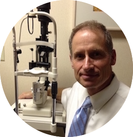

Our Doctors
Thomas J. Ashley, M.D. (KU, 1984) joined the practice in 1988 following his internship at the University of Oregon and residency at Scheie Eye Institute, University of Pennsylvania. He is certified by the American Board of Ophthalmology, is a Fellow of the American Academy of Ophthalmology, and is on the staff of Stormont-Vail Healthcare and St. Francis Health in Topeka and Wamego Health Center in Wamego.
James C. Williams, O.D, Originally from North Carolina, James graduated from the Pennsylvania College of Optometry in 1986 and completed a residency at The Scheie Eye Institute, Philadelphia. He is a member of the Kansas Optometric Society and the American Optometric Society. He joined the practice in 1999.
Our Story
Our practice was started by Byron J. Ashley, a veteran of both world wars with the US Navy. A graduate of Kansas City Medical College who practiced general medicine in Everest KS in the 1920s, he was the first Eye Ear Nose and Throat resident of the University of Oregon in 1931. After additional training at the Graduate Hospital of Philadelphia he restricted his practice to ophthalmology with an office in the Mills building in downtown Topeka.
B. John Ashley, Jr., M.D. (KU, 1956) joined the practice after two years of service in the air force and residency at the University of Pennsylvania. They built the present office on 8th street between the hospitals in 1964.
All three generations practiced together for a year, the only such practice in the country at that time. Byron received the Balford Jeffrey award for distinguished contributions to health care from Stormont-Vail in 1991 after he retired. John retired in 2005.